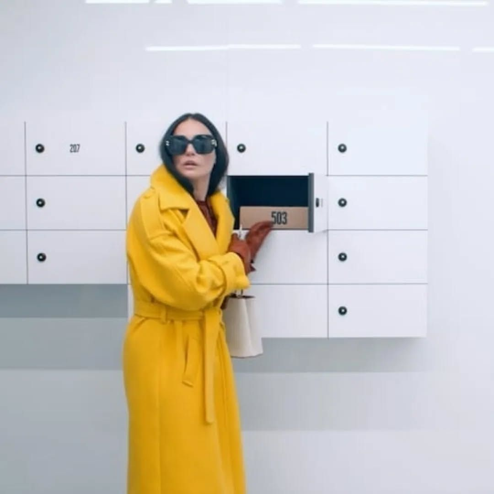
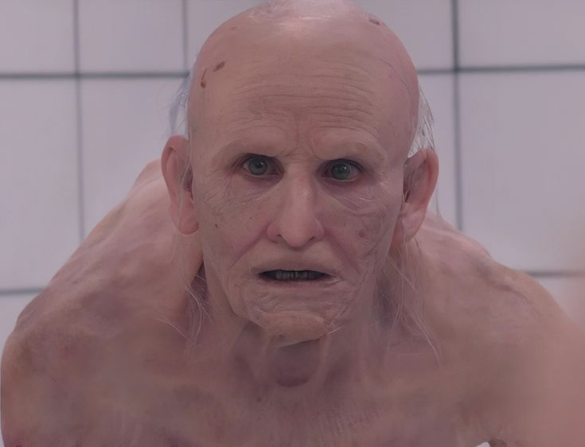
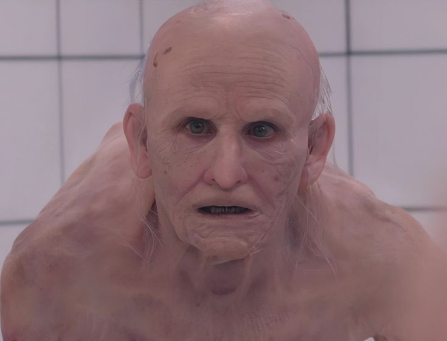
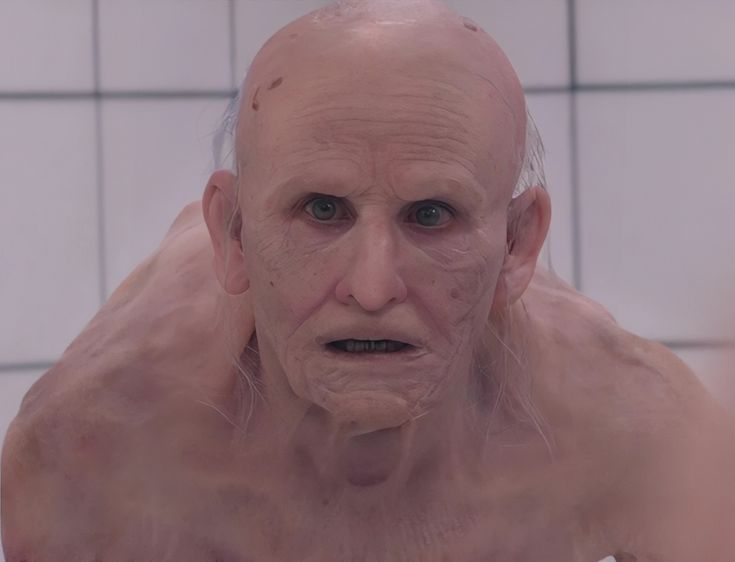

- O filme foi apresentado em estreia mundial no Festival de Cannes 2024, onde recebeu o prémio de Melhor Argumento.
- Demi Moore regressou ao cinema com um dos papéis mais desafiantes da sua carreira, após vários anos afastada de grandes produções.
- A realizadora Coralie Fargeat é conhecida por filmes com protagonistas femininas fortes e por explorar temas ligados ao corpo e à violência, como já tinha feito em "Revenge" (2017).
- Grande parte dos efeitos especiais do filme foram feitos com maquilhagem e próteses reais, evitando o uso excessivo de efeitos digitais.
- O conceito da troca de corpos entre Elisabeth e Sue funciona como uma metáfora para a luta interior entre quem somos e quem a sociedade espera que sejamos.
- O filme mistura vários géneros: terror, ficção científica, drama psicológico e sátira social.
- O título "A Substância" representa simbolicamente a promessa ilusória de uma solução fácil para o medo de envelhecer.
Imagens Significativos

 

